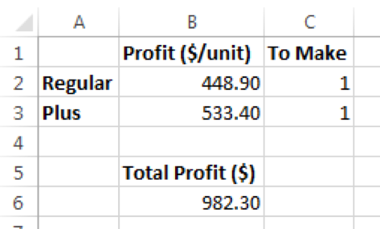

Quick Recap of Linear Optimization
Samuel Burer
Last updated: December 21, 2016
iPhone 6 vs iPhone 6 Plus

iPhone 6 vs iPhone 6 Plus (cont’d)
iPhone 6 vs iPhone 6 Plus (cont’d)
iPhone 6 vs iPhone 6 Plus (cont’d)
Source: IHS Inc.
iPhone 6 vs iPhone 6 Plus (cont’d)
Source: Time Inc.
iPhone 6 vs iPhone 6 Plus (cont’d)
Source: Apple
iPhone 6 vs iPhone 6 Plus (cont’d)
A fundamental question for Apple:
How many of each to make?
How Many of Each?
- Regular = $649 - $200.10 = $448.90 profit/unit
- Plus = $749 - $215.60 = $533.40 profit/unit
How Many of Each? (cont’d)
Let
r = # of Regular to make
p = # of Plus to makeThen Apple wants to
max 448.90*r + 533.40*pHow Many of Each? (cont’d)

Model suggests to make an infinite number of units, which is clearly impossible. What are we missing?
How Many of Each? (cont’d)
Even if we could make an infinite number, we couldn’t sell them all because of limited demand.
How Many of Each? (cont’d)
Companies such as Apple always forecast demand. Let us say that demand will be 74,500,000 units with a 3:1 split between Regular and Plus.
max 448.90*r + 533.40*p
s.t. r <= 55,875,000
p <= 18,625,000How Many of Each? (cont’d)
How Many of Each? (cont’d)
The best solution is to make as many as you can sell. Makes sense, but what if…
Source: PC Magazine
How Many of Each? (cont’d)
- Glass usage
- Regular = 9.4 sq in
- Plus = 12.9 sq in
- Apple’s glass supplier has only 650,000,000 sq in of glass available
How Many of Each? (cont’d)
max 448.90*r + 533.40*p
s.t. r <= 55,875,000
p <= 18,625,000
9.4*r + 12.9*p <= 650,000,000How Many of Each? (cont’d)
How Many of Each? (cont’d)
But what if Apple’s supplier loses one of its two factories due to an earthquake? (Seriously.)
But it doesn’t make sense to make a negative number of units. How to fix?
How Many of Each? (cont’d)
max 448.90*r + 533.40*p
s.t. r <= 55,875,000
p <= 18,625,000
9.4*r + 12.9*p <= 325,000,000
r >= 0, p >= 0How Many of Each? (cont’d)
What is Optimization?
Recall:
- Descriptive analytics = describing what has happened
- Predicitive analytics = predicting what will happen
- Prescriptive analytics = deciding what should happen
Optimization is an important tool within prescriptive analytics
What is Optimization? (cont’d)
An optimization model requires four things:
A specific situation with decisions that must be made in order to optimize some objective. Constraints on those decisions
A logical model describing the relationship between the decisions, objective, and constraints
Data to link the logical model to the specific situation
Software to process the model and data together to arrive at a specific decision that can be implemented in the specific situation
What is Optimization? (cont’d)
We will focus on #2 and #4 (building the logical model and using the software)
Less emphasis will be placed on #1 and #3 (the specific situation and the data), although these are extremely important, too
- Note: Predictive analytics often helps with getting the data for an optimization model
What is Optimization (cont’d)
Optimization is also a tool in a field called operations research, which intersects with business analytics
This blog post provides a nice background